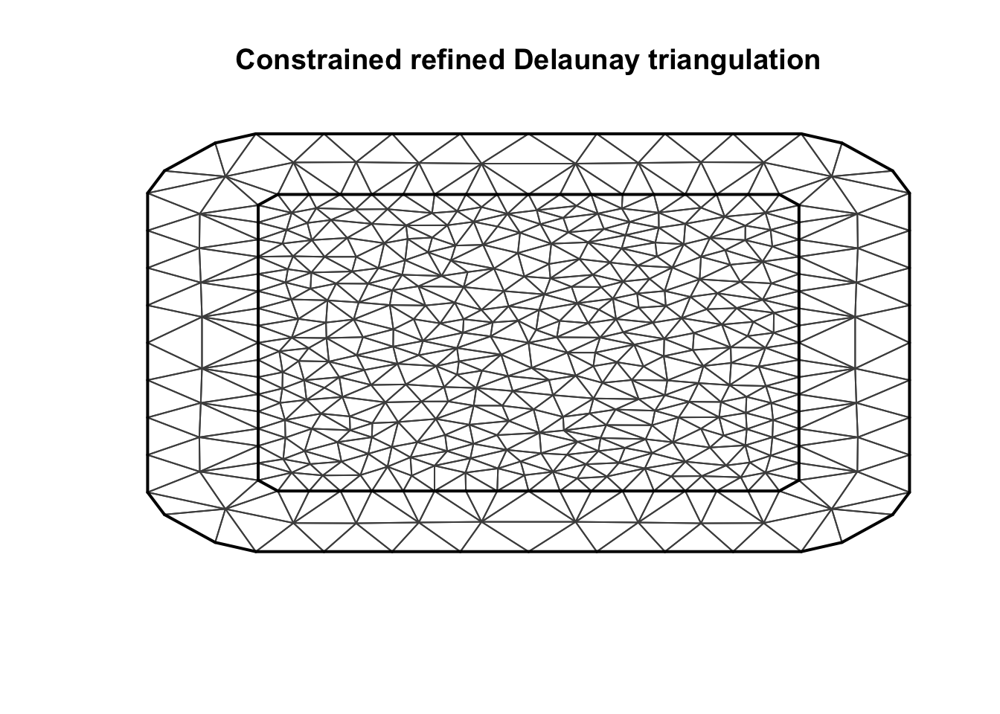
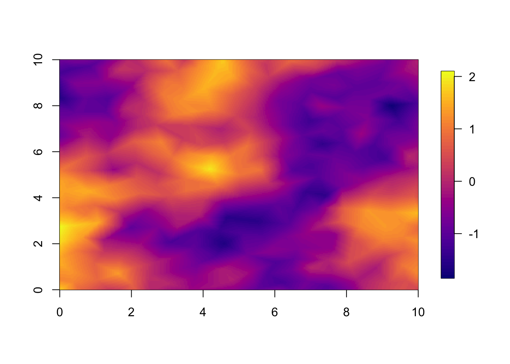
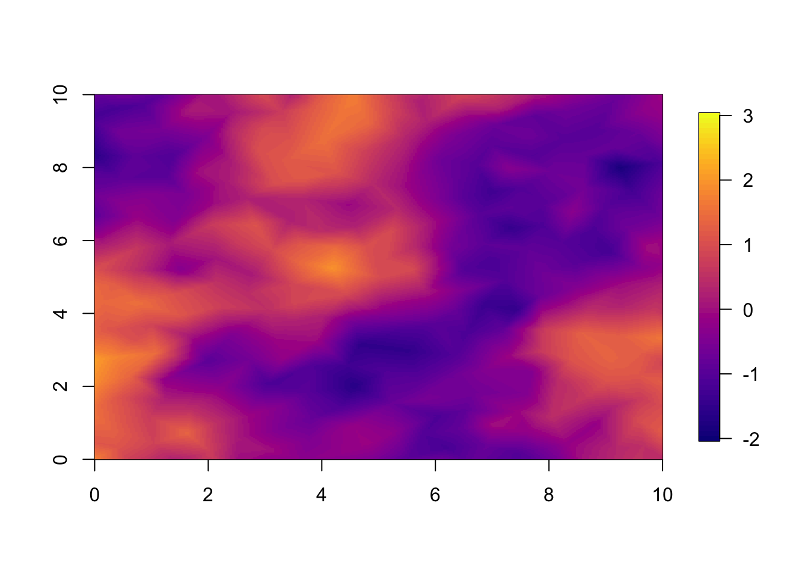
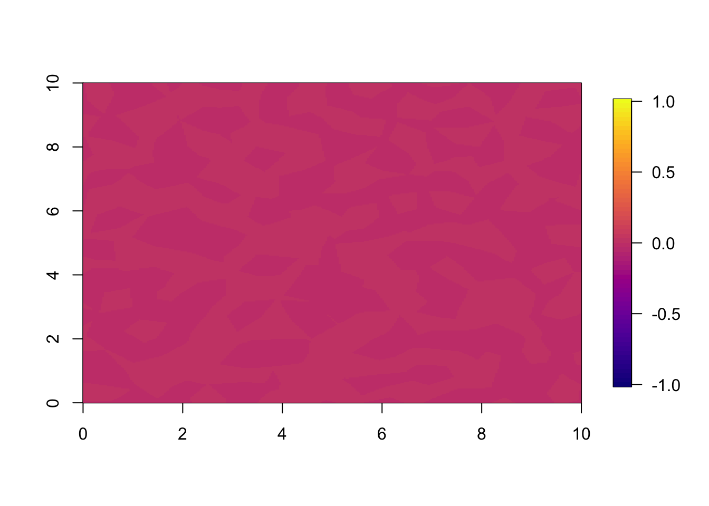
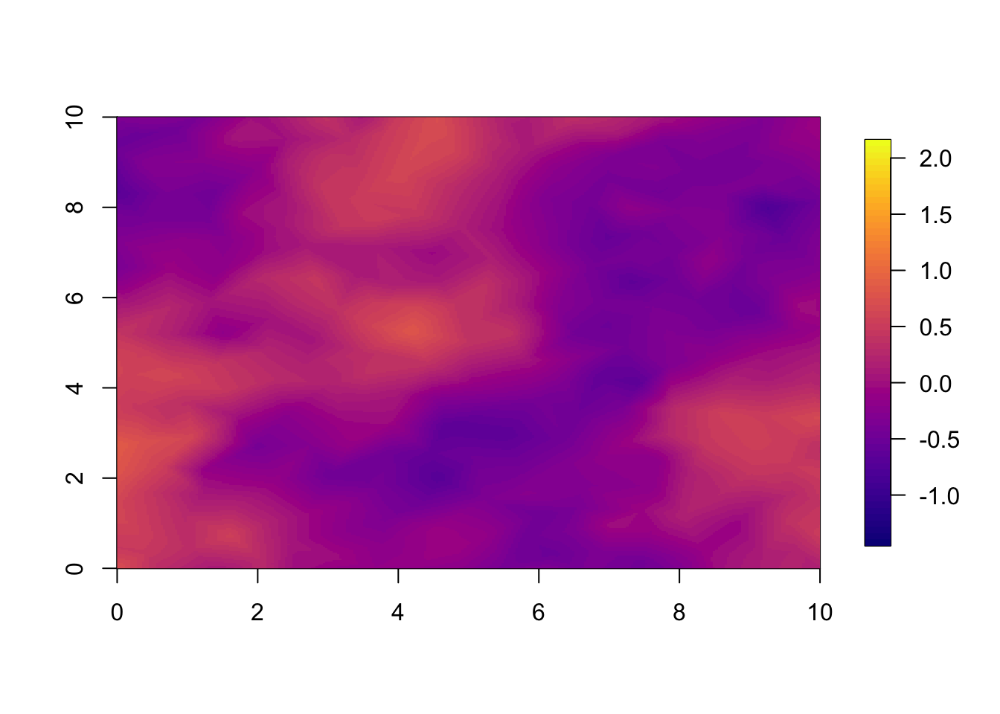
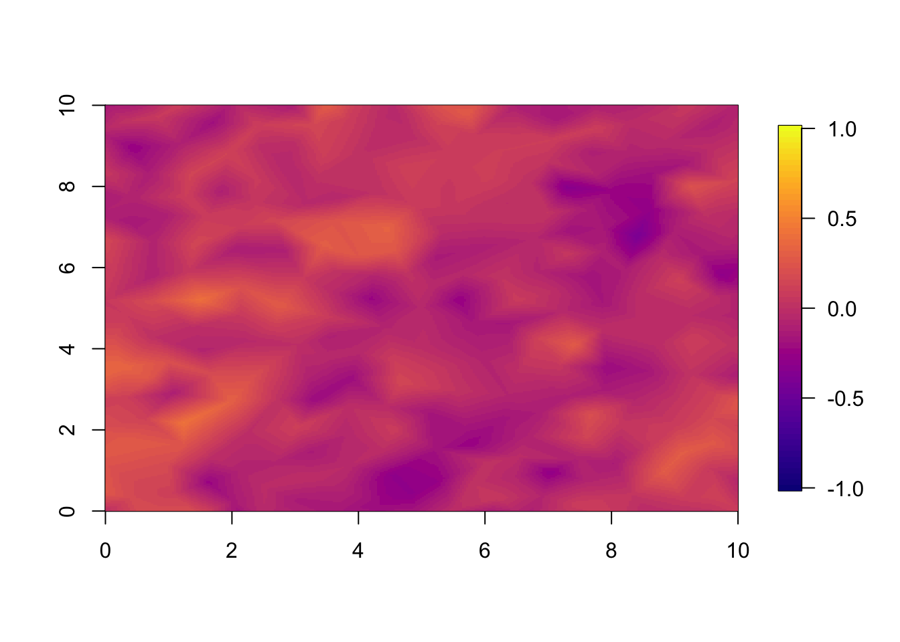
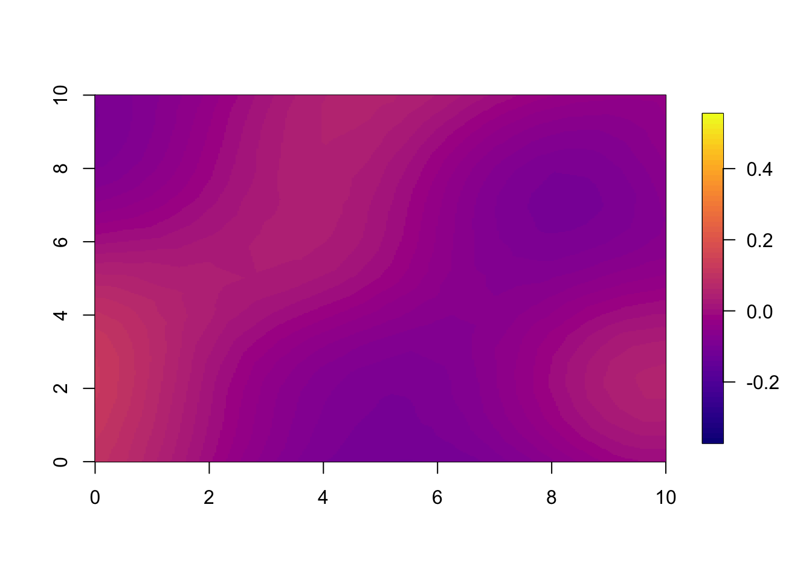
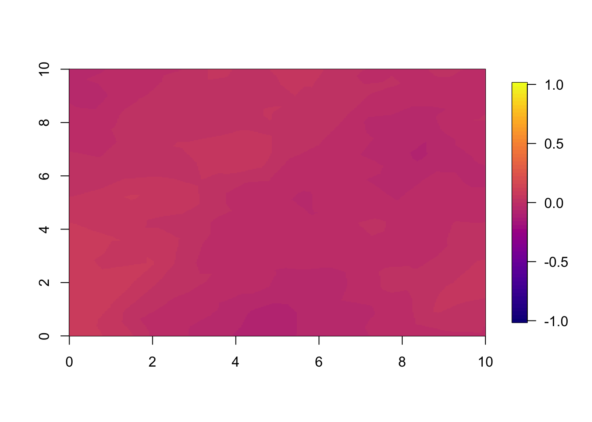

Comparing forecasts from separable models and non-separable diffusion models
Haakon Bakka
btopic132 updated 18 March 2020
1 About
In this example we show the difference between the forecasts from 2 space-time models, one separable model, and one non-separable diffusion-based model.
This is supplementary material to the paper The diffusion-based extension of the Matérn field to space-time by Bakka et. al. https://arxiv.org/abs/2006.04917 Here we see a comparison of the two first of the three main examples in that paper.
1.1 Setup
First, you need to download the functions we will use to your current working directory getwd().
download.file("https://raw.githubusercontent.com/haakonbakkagit/haakonbakkagit.github.io/master/functions-rgeneric-121-march2020.R", destfile="functions-rgeneric-121-march2020.R")library(INLA)
library(fields)
library(viridisLite)
library(gtools)
## Load functions
source("functions-rgeneric-121-march2020.R")
## Seed
set.seed(20200119)1.2 Input
These are the variables you may want to change and explore.
## Range in time
## For nonseparable
## (we use a factor of 1.8 modification when comparing to separable, see paper)
range.t = 3.5
## Range in space
range.s = 5
## Max edge in spatial mesh
## Small numbers makes algorithm very slow
## Should be less than 1/4 of range.s, preferably much smaller
## ex: 1.5, 1, 0.7, 0.5
max.e = 1
## Number of timepoints used
## Must be 2 or greater
t.max = 52 Create spatial and temporal meshes
We create the 1 dimensional temporal mesh, as a completely regular mesh.
mesh.t = inla.mesh.1d(1:t.max)We create a simple 2 dimensional spatial mesh.
fake.locations = matrix(c(0,0,10,10, 0, 10, 10, 0), nrow = 4, byrow = T)
mesh.s = inla.mesh.2d(loc = fake.locations, max.edge=max.e*c(1, 2))plot(mesh.s)
3 Standard INLA separable model
Here we run the standard separable (group) model that can be found in many INLA applications. See the SPDE book for details. https://becarioprecario.bitbucket.io/spde-gitbook/
3.1 Temporal part
First we use a hidden function to extract the Q matrix used by the AR1 model, to investigate it. This part is only to showcase exatcly what the AR1 model is.
## Approx rho for decay in 6 time points
approx.rho = 0.13^(1/6)
theta2 = logit(approx.rho)
N = t.max
Q = INLA:::inla.extract.Q('i', formula = y ~ f(i, model='ar1', hyper = list(prec=list(initial=0, fixed=T), theta2=list(initial=theta2, fixed=T))), data = data.frame(y=1:N, i=1:N))
Q## 5 x 5 sparse Matrix of class "dgCMatrix"
##
## [1,] 1.22 -0.51 . . .
## [2,] -0.51 1.43 -0.51 . .
## [3,] . -0.51 1.43 -0.51 .
## [4,] . . -0.51 1.43 -0.51
## [5,] . . . -0.51 1.22solve(Q)## 5 x 5 sparse Matrix of class "dgCMatrix"
##
## [1,] 1.000 0.422 0.18 0.075 0.032
## [2,] 0.422 1.000 0.42 0.178 0.075
## [3,] 0.178 0.422 1.00 0.422 0.178
## [4,] 0.075 0.178 0.42 1.000 0.422
## [5,] 0.032 0.075 0.18 0.422 1.0003.2 Spatial part
We set up the standard spatial model.
mco.space = inla.spde2.pcmatern(mesh = mesh.s, prior.range = c(5, .5), prior.sigma = c(1, .5))We extract the preciison matrix of the spatial model, using our chosen spatial range.
Qsep.s = inla.spde2.precision(spde = mco.space, theta = log(c(range.s,1)))4 Simulate for t=1
We simulate a dataset for \(t=1\). We will only observe data at \(t=1\), and no data at \(t>1\).
## Gaussian noise
sig.eps = 0.01
## Seed used in C code
inla.seed = sample(1E12, 1)
## Sample with INLA
u.sim = inla.qsample(n=1, Qsep.s, seed = inla.seed, num.threads=1)[, 1]
u.sim = u.sim - mean(u.sim)
sim.noise = rnorm(length(u.sim), 0, 1) * sig.eps
## st is spacetime index
df1 = data.frame(y=u.sim+sim.noise,
u.sim = u.sim, sim.noise=sim.noise,
year=1)
summary(df1)## y u.sim sim.noise year
## Min. :-3.4 Min. :-3.4 Min. :-0.027 Min. :1
## 1st Qu.:-0.8 1st Qu.:-0.8 1st Qu.:-0.006 1st Qu.:1
## Median :-0.2 Median :-0.2 Median : 0.001 Median :1
## Mean : 0.0 Mean : 0.0 Mean : 0.000 Mean :1
## 3rd Qu.: 0.6 3rd Qu.: 0.7 3rd Qu.: 0.007 3rd Qu.:1
## Max. : 5.5 Max. : 5.5 Max. : 0.042 Max. :1The easiest way to get predictions for \(t>1\) is to add fake data locations, with no observation (coded as NA).
## df2: Augment df1 with the needed prediction locations
temp.na = rep(NA, (t.max-1)*mesh.s$n)
df2 = data.frame(y=c(df1$y, temp.na),
locx = rep(mesh.s$loc[, 1], t.max),
locy = rep(mesh.s$loc[, 2], t.max),
year = rep(1:t.max, each=mesh.s$n)
)
## Our final dataframe
summary(df2)## y locx locy year
## Min. :-3 Min. :-3.0 Min. :-3.0 Min. :1
## 1st Qu.:-1 1st Qu.: 1.7 1st Qu.: 1.6 1st Qu.:2
## Median : 0 Median : 5.0 Median : 5.0 Median :3
## Mean : 0 Mean : 5.0 Mean : 5.0 Mean :3
## 3rd Qu.: 1 3rd Qu.: 8.4 3rd Qu.: 8.3 3rd Qu.:4
## Max. : 6 Max. :13.0 Max. :13.0 Max. :5
## NA's :17365 Nonseparable model: rgeneric object
In January 2020, the nonseparable model is coded in the rgeneric interface of INLA. This will make it slower than if it was implemented in C.
## Rgeneric object containing needed variables
## Mesh in space and time
## Lambdas for exponential prior on ransformed hyper-param (1/rt, 1/rs and sig)
rgen.obj = list(mesh.space = mesh.s,
mesh.time = mesh.t,
lambdas = c(1,1,1))
## Nonsep model definition
nm = mesh.s$n*mesh.t$n
## The non-separable random effect / random field
## We use the function loaded in the beginning of the document
mco.nonsep = inla.rgeneric.define(
model=stmodel121.interpret, debug=FALSE, n=nm, obj=rgen.obj)6 Function for plotting
A generic function for plotting spatial fields in this example.
local.plot.field = function(field, mesh=mesh.s,
timepoint=1, xlim, ylim, ...){
## Here: mesh is spatial mesh only
# Possible error when using a wrong spatial mesh
stopifnot((length(field) %% mesh$n) ==0 )
field = field[1:mesh$n + (timepoint-1)*mesh$n]
# - only use the relevant part of the incoming vector
# Choose plotting region to be the same as the study area polygon
if (missing(xlim)) xlim = c(0, 10)
if (missing(ylim)) ylim = c(0, 10)
# Project the mesh onto a 300x300 grid
proj = inla.mesh.projector(mesh, xlim = xlim,
ylim = ylim, dims=c(300, 300))
# Do the projection
field.proj = inla.mesh.project(proj, field)
# Plot it
image.plot(list(x = proj$x, y=proj$y, z = field.proj), col = plasma(64),
xlim = xlim, ylim = ylim, ...)
}6.1 Plot simulation
We plot the simulated true field. The observations are this truth added some measurement noise.
local.plot.field(field = df1$u.sim, mesh = mesh.s)
7 Model setup
We define an empty list to conatin our prior models.
M = list()
for (i in 1:2) M[[i]] = list()7.1 Stack setup
We set up the stack as in the SPDE book https://becarioprecario.bitbucket.io/spde-gitbook/.
iset = inla.spde.make.index('i', n.spde = mesh.s$n, n.group = t.max)
A = inla.spde.make.A(mesh = mesh.s, loc = cbind(df2$locx, df2$locy), group = df2$year)
sum(A-Diagonal(nrow(A)))## [1] -3.6e-14Note that this A matrix is a diagonal matrix, since we have observations only on the nodes of the mesh. In this case the stack is not really needed, but we include it anyway to make the code generalise more easily (to your needs).
stack = list()
stack[[1]] = inla.stack(
data = list(y = df2$y),
A = list(A, 1),
effects = list(iset, m = rep(1, nrow(df2))),
tag = 'stdata') ## Special: Since the index is very structured we can use the same A matrix here
## We know that iset is in the right order
## (year 1 then year 2 etc, with the whole spatial mesh each time)
i.nonsep = 1:nm
stack[[2]] = inla.stack(
data = list(y = df2$y),
A = list(A, 1),
effects = list(i.nonsep=i.nonsep, m = rep(1, nrow(df2))),
tag = 'stdata') 7.2 Separable model
Next we create the kronecker product (group) model. We cannot infer the temporal dependency, since we only have data for \(t=1\), so we have to fix this parameter.
## We want to fix the autocorrelation in time
## The theta2 as defined before is the INLA internal parametrisation of rho
hyper.ar1.rho = list(rho = list(initial=theta2, fixed=TRUE))
form.sep = y ~ -1 + m + f(i, model = mco.space, group = i.group,
control.group = list(model="ar1", hyper = hyper.ar1.rho))
M[[1]]$formula = form.sep7.3 Nonseparable model
We redefined the nonseparable model. Here we add the fixed.theta argument.
## We need to fix the temporal range in the non-separable model
rgen.obj2 = rgen.obj
rgen.obj2$fixed.theta = c(log(range.t), NA, NA)
mco.nonsep.fix = inla.rgeneric.define(model=stmodel121.interpret, debug=FALSE, n=nm, obj=rgen.obj2)
form.nonsep = y ~ -1 + m + f(i.nonsep, model=mco.nonsep.fix, n=nm)
M[[2]]$formula = form.nonsep7.4 Check that formulas are correct
print(M)## [[1]]
## [[1]]$formula
## y ~ -1 + m + f(i, model = mco.space, group = i.group, control.group = list(model = "ar1",
## hyper = hyper.ar1.rho))
##
##
## [[2]]
## [[2]]$formula
## y ~ -1 + m + f(i.nonsep, model = mco.nonsep.fix, n = nm)8 Inference
Setup some initial values (use NULL if you do not know them).
## WARNING: Set these variables to NULL if you change the model in any way!
M[[1]]$init = c(1.775 , 0.153)
M[[2]]$init = c(1.11 , -0.056)
fits = list()Run the INLA algorithm. This is the time consuming part of this script. Here, we fix the Gaussian nugget effect to be of the correct size, to save time and to get a more accurate comparison.
for (i in 1:length(M)){
print(paste("Running: ", i))
stk = stack[[i]]
fits[[i]] = inla(M[[i]]$formula,
family="gaussian",
control.family = list(hyper = list(prec = list(
initial = log(sig.eps)*-2, fixed=T)
)),
data=inla.stack.data(stk),
control.predictor=list(A=inla.stack.A(stk), compute=T),
verbose=F,
num.threads = 3,
control.inla = list(int.strategy = "eb"),
control.mode = list(restart=T, theta=M[[i]]$init),
control.compute = list(dic=TRUE, cpo=TRUE, waic=T,
mlik=T, return.marginals=F, config=T,
openmp.strategy="default", smtp="taucs")
)
print(round(fits[[i]]$cpu.used[4],2))
}## [1] "Running: 1"
## Total
## 26
## [1] "Running: 2"
## Total
## 178## Check what we can set the initial values to
for (i in 1:length(M)){
print(paste(round(fits[[i]]$internal.summary.hyperpar$mean, 3), collapse = " , "))
}## [1] "1.779 , 0.154"
## [1] "1.11 , -0.055"## Comparison
fits[[1]]$summary.hyperpar[ ,c(4,3,5)]## 0.5quant 0.025quant 0.97quant
## Range for i 5.8 4.58 8.0
## Stdev for i 1.2 0.94 1.5## This only works in this specific case, when we fixed the first hyper-parameter
data.frame(var=c("Range", "Stdev"), exp(fits[[2]]$summary.hyperpar[c(1,2), c(4,3,5)]))## var X0.5quant X0.025quant X0.97quant
## Theta1 for i.nonsep Range 3.03 2.77 3.3
## Theta2 for i.nonsep Stdev 0.95 0.83 1.19 Plot results
We extract the predictions that we want to plot. This
pred.sep = fits[[1]]$summary.random$i$mean + fits[[1]]$summary.fixed$mean[1]
pred.nonsep = fits[[2]]$summary.random$i$mean + fits[[2]]$summary.fixed$mean[1]9.1 Year 1
We set up some clever variables to improve visualisation across years. We define zlim to see the plots on the same scale. However, forecasts will regress to the mean as you go into the future, approximately by approx.rho. Since the mean is close to zero, we can use the factor approx.rho to discount the zlim every year. In the end we plot with different zlim every year, but the same zlim within each year.
## zlim for plots
local.zlim = c(-2, 3)
## Yearly reduction in zlim
zlim.disc = approx.rho # discount factorPredictions from separable model at year 1.
local.plot.field(pred.sep, timepoint = 1, zlim=local.zlim)Predictions from nonseparable model at year 1.
local.plot.field(pred.nonsep, timepoint = 1, zlim=local.zlim)
The difference between the two predictions (or estimates) are very small. This is because we fitted a very informative spatial dataset at year 1.
## Difference between predictions.
local.plot.field(pred.nonsep-pred.sep, timepoint = 1, zlim=c(-1,1))
9.2 Year 2
For year 2 we already see a large difference between the two models. This is large because the correlation between years is so small. With range.t set to 3.5, every year, there is a large change from the year before. If we set a longer temporal range, we observe less difference between the models at the 1 year forecast.
local.plot.field(pred.sep, timepoint = 2, zlim=local.zlim*zlim.disc)
local.plot.field(pred.nonsep, timepoint = 2, zlim=local.zlim*zlim.disc)
local.plot.field(pred.nonsep-pred.sep, timepoint = 2, zlim=c(-1,1))
9.3 Year 5
You can plot any of the years; we plotted year 1 and 2, and now we show year 5. Year 5 illustrates how, into the far future, both the models have regressed so close to the mean that the pointwise difference is small.
if(t.max>=5) local.plot.field(pred.sep, timepoint = 5, zlim=local.zlim*zlim.disc^5)if(t.max>=5) local.plot.field(pred.nonsep, timepoint = 5, zlim=local.zlim*zlim.disc^5)
if(t.max>=5) local.plot.field(pred.nonsep-pred.sep, timepoint = 5, zlim=c(-1,1))